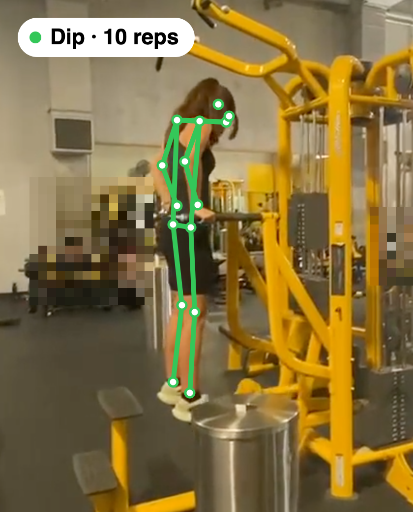
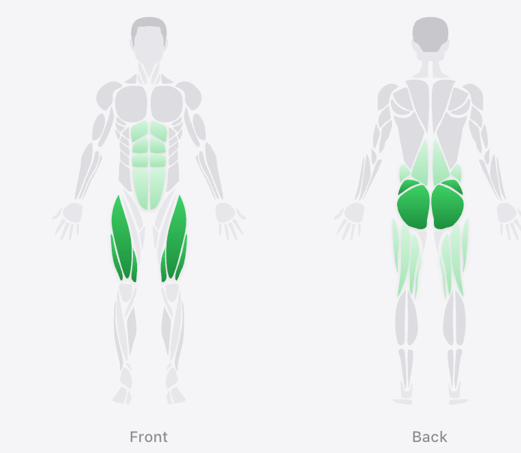
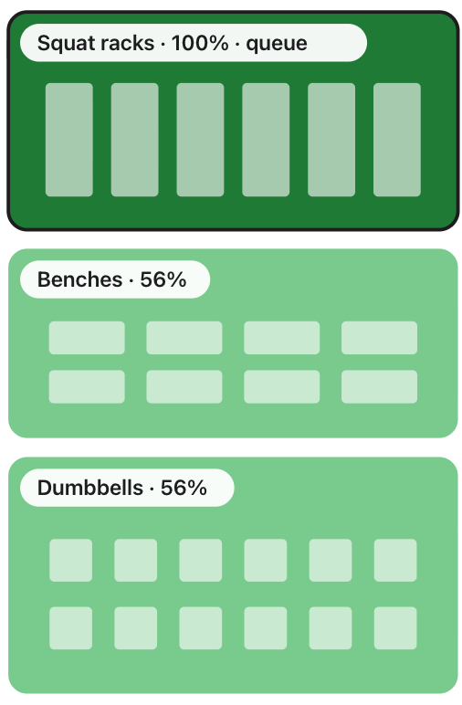

Spottr turns the cameras a gym already has into automatic workout logs for members and floor data for the gym.
Live demo · tryspottr.app/demo
Felix Müller-Gliemann · Martin · Gard, co-founders info@tryspottr.app · October 2026
[TODO: full names of Martin and Gard]

Real pipeline output
What the AI sees

Member app · demo data

Gym floor · demo data
Spottr · Pre-seed
Gym cameras already film the floor. Nobody counts the reps.
Members
Nobody types between sets.
Founder observation
Gyms
No data on how their floor is used, and a third of members leave each year.
[TODO: one verbatim, approved quote from a gym operator, with name and gym (HC1)]
Gyms: average annual retention 66.4% (HFA 2025 Benchmarking, 175 operators, data year 2024). Members: founder observations, not a survey.
Spottr · Pre-seed
Solution · the gym pays, members use it
Members get every set logged. Gyms see their floor, hour by hour.
Built
Body pose, not faces. Detected bystanders are pixelated in the replay.
Real pipeline output
Member app · demo data
Floor at 6pm, Monday
Demo data
Replay: recorded dip clip, lifter's consent confirmed; keypoints and rep count are the pipeline's output; background people pixelated. Member app and floor: the demo's simulated gym. Gym dashboards are simulated today.
Spottr · Pre-seed
How it works
Designed to plug in: one box and the cameras a gym already has.
Real outputTwo recorded phones, one shared map. A test room, not a gym.
Gym cameras
Live feed: building
Joins the gym's network
Spottr box
Building
Same method for every lift
Pose → reps
Builton squats, dips
One blurred image per set
Snapshot → lift
Built
App + dashboard
Built · gym data simulated
Today the pipeline runs on recorded footage; live camera ingestion and the box are in development. Map: world-service output, each person kept as one anonymous identity across both views (world-service/docs/REPORT.md).
Spottr · Pre-seed
Progress
8 of 20 gyms replied. One chain is in pilot talks.
Founder-reportedMulti-location San Francisco chain: location GM positive, corporate sign-off pending.
[TODO (OC1): with a signed pilot, LOI or corporate email: "An [N]-location San Francisco chain starts a pilot with us on [date]." + logo with permission; then make this slide 4]
27 Sep
Hackathon
Reps counted from pose
28 Sep – 6 Oct
Live demo
App and gym demo live
9 Oct
Floor map
Two cameras, one map
So far
Outreach
20 gyms emailed
Outreach: founder-reported; no pilot agreed, no LOI, no revenue yet. Dates: git history of this repo (2026); hackathon: Berkeley × Google DeepMind, 3-hour sprint, no placement.
Spottr · Pre-seed
Market and business model
Gyms pay per location; members use it free. US chains alone: about $70M a year.
$1,500per location per month
Hypothesis · untested50% camera share assumed
Members: free automatic logging; premium AI coach later (hypothesis). Illustrative gross margin about 83% at this price (cost lines assumed).
$498M
All US clubs
55,281 clubs
$70M
US chains
7,825 locations
Start
Bay Area chains
Size = locations × 50% with usable cameras × $18,000 a year. US clubs: HFA. US chains: vendor counts, ±5%. Price is the founders' target; no customer has paid yet.
Spottr · Pre-seed
Why now
A vision model now names the exercise from one blurred image per set.
No rule written per exercise: the same method runs on every lift.
Tested on squats and dips
Sent to the model
→
Squat
smith machine confidence 0.95
→
Dip
bodyweight confidence 0.95
Real inputs and outputs from recorded clips (session.json, Gemini Flash-Lite); faces are pixelated before the call. Cost: est. $0.001–0.005 per set from list prices, token counts not yet measured. Pose: 13–14 fps on recorded clips (team-stated, not a benchmark).
Spottr · Pre-seed
Market
US gym chains alone: about $70M a year at our target price.
AssumedHalf of locations have usable cameras (30–70%: $42–99M).
Hypothesis$1,500 per location per month, untested.
MathEvery 100 locations ≈ $1.8M a year.
$498M
All US clubs
55,281 clubs
$70M
US chains
7,825 locations
Start
Bay Area chains
Size = locations × 50% × $18,000 a year. US clubs: HFA. US chains: vendor counts, ±5%. Global not sized until the gym count has a source. Math in appendix A4.
Spottr · Pre-seed
Business model
Gyms pay per location. Members use it free.
Target price
$1,500
per location per month, hardware included
Hypothesis · untested
Margin
Cost
$1,247
Gross margin, 83%
$253
Cost to serve, 17%
Illustrative: price untested, costs assumed
Break-even
Pays for itself if a location keeps [N] members it would have lost.
N = $1,500 ÷ monthly dues
[TODO: dues from the chain or a public price list (NU3)]
Members
Free logging. Paid AI coach later.
Hypothesis
Per location per month, 400-member gym, one box: hardware over 36 months, Gemini at the 2027 list price, payments 2.9%. Derived in CLAIMS.md; cost lines are assumptions. No customer has paid yet.
Spottr · Pre-seed
Competition
Apps need typing. Machines track only themselves. Camera tracking has no proven leader yet.
Hevy · Gravit
Logging apps
Members type every set.
EGYM · Technogym
Smart machines
Track only their own machines.
VPixel · Exersight
Camera trackers
VPixel: existing cameras since 2019, no named gyms. Exersight: its own cameras.
Spottr
Existing cameras + one box
Sets and reps for members, floor data for the gym.
[TODO: our verified edge vs VPixel (HC4)]
Our reading of public material: VPixel (Agmis article; Health Club Management, Mar 2019), Exersight (exersight.com). Confirm Exersight is the "German startup" from v2. Whoop and GroeFit: appendix A5.
Spottr · Pre-seed
Team
Three full-time co-founders who built the product themselves.
CAM 01 · TEAM
[TODO: real group photo of the three founders][TODO: surnames, titles, institutions, how long you've known each other, Gal, LinkedIn links]
Felix Müller-GliemannCo-founder · CEO
Business, LMU Munich; exchange at UC Berkeley Haas. Ex-Founders Associate at an AI-native M&A startup. Built the two-camera floor map.
Martin [surname]Co-founder · CTO
MSc Entrepreneurship. Built the vision pipeline (pose, tracking, rep counting) and the member app.
Gard [surname]Co-founder · CPO (tbc)
MSc Robotics. [TODO: what Gard built or owns]
Who built what: git history (authors of backend/, world-service/, src/). Titles: CLAIMS.md, to be confirmed.
Spottr · Pre-seed
The ask
$300K pre-seed for 12 months.
To go live on real gym cameras, run 5–15 pilot locations and convert the first to paid.
Plan, not commitments[TODO: confirm months (meeting notes: chain onboarding from 1 Nov); use-of-funds split; instrument and cap]
tryspottr.app/demo
info@tryspottr.app
Oct 2026
Close
Jan 2027
Box benchmark
Apr 2027
First live install
Jul 2027
5–15 pilots
Oct 2027
First paid LOI
then a seed round
Use: founder runway, pilot hardware (about $7–36K for 5–15 pilots: 5 × $1,489 to 15 × $2,388), product. Target close end of October 2026; months from the v1 plan.
Spottr · Pre-seed
Appendix
Spottr · Pre-seed
A1 · Privacy
We track body pose, not faces. Here is what the build does today.
Available today
TodayNo face recognition. Sets and reps come from body keypoints over time.
TodayBystanders pixelated head to toe in the member replay (when detected).
TodayBlurred snapshots only: the model gets one small image per set, lifter's face pixelated, others fully pixelated.
TodayOperators see aggregates: counts, trends, zones. No photos or video.
TodayRecaps generated from text (exercise names, reps), never video.
In development
BuildingAll processing on the Spottr box; goal: raw video never leaves the gym.
BuildingMember opt-in and opt-out.
BuildingRetention windows with automatic deletion.
BuildingSelf-serve export and deletion.
Known limit
Blur covers only people the pose model detects; the replay blurs while drawing, the video file itself is not blurred.
[TODO: GDPR / CCPA framework and consent flow, after legal review]
Mirrors the /gyms/privacy page ("Available today" vs "In development"), which lists only what the current build does.
Spottr · Pre-seed
A2 · Technology
From camera stream to logged set, with no per-exercise rules.
Gym IP cameras
Cameras
Live feed: building
YOLO26 pose, BoT-SORT tracks
Pose + tracking
Built
From joint motion; the label never changes the count
Rep counting
Built
One blurred snapshot per set to Gemini Flash-Lite
Exercise label
Built
Calibration, sync, one ID per person
Shared floor map
Built
Tested on
Recorded gym clips (squat, dip, crowd). The floor map: two phones filmed in a lounge, not a gym.
Designed for
Gym IP cameras and one on-site box (Mac mini class) per gym; only blurred snapshots and workout data leave the building. Building
Runs on
Python vision pipeline · FastAPI world service · React/TypeScript member app and gym dashboard.
Rep counting is exercise-agnostic by design (backend/vision/analyze.py) and tested on squats and dips. Floor map: world-service/docs/REPORT.md.
Spottr · Pre-seed
A3 · What we have measured
Measured: identity tracking across two cameras. Not yet: rep-count accuracy at scale.
Test
Result
Scope
Two-camera identity
IDF1 0.949 · 0 false merges
Held-out 60 s, 10 people, single reviewer
Cross-camera linking
Recall 0.70 · 21% "needs confirmation" · 11 ID switches
Same segment
Floor position
Cameras agree within 0.26 m (median), 0.72 m (p90)
Same segment; two phones in a lounge, not a gym
Rep counting
5 squats and 10 dips counted · 0 false sets on a crowd clip
Floor map: world-service/docs/REPORT.md §3 (held-out segment 420–480 s). Pipeline: CLAIMS.md, slide-7 rows; fps from session.json (13.4 and 14.2).
Spottr · Pre-seed
A4 · Market and unit economics
Locations × camera share × price. Price and camera share are assumptions.
Layer
Locations
With cameras (50%)
Price / year
Size
Source
US chains
7,825
~3,900
$18,000
$70M
Vendor counts, ±5%
US, all clubs
55,281
~27,600
$18,000
$498M
HFA
Bay Area chains
~208 (implied)
~104
$18,000
$1.9M
v1 research, assumed
Global
Not sized: no sourced global gym count yet
Open
Cost to serve, per location per month
Gemini labels $99 · support $50 · payments $43.50 (2.9%) · hardware $41.40 (one box over 36 months) · hosting $15 · device management $4 = $252.90, so 83.1% gross margin at $1,500. Assumed
What gyms pay for software today
Mindbody Starter $79 per location per month; Glofox €220–515 per month per plan. Camera vendors: Flock $1,500 per camera per year (2018); Density $45 per sensor per month (2016). Our $1,500 is about 19× gym software per location, so the chain pilot tests the price first.
Camera share 30–70% moves US chains to $42–99M. Costs: CLAIMS.md slide 9 (400-member gym, one box; two boxes: 81.2%). Comparators: deck/benchmark/04_analog_decks.md (pricing pages and press).
Spottr · Pre-seed
A5 · Competitors
Automatic trackers bring their own hardware or show no named gyms. Spottr is designed for the cameras a gym already owns.
Player
What it is
Tracking
Hardware
What it lacks vs Spottr
VPixel (Agmis)
Coaching and retention from gym cameras (since 2019)
Automatic
Existing cameras
No named gyms or prices in its public material
Exersight
Camera-based form feedback, Germany (2025)
Automatic
Own cameras
New cameras per studio; one development site
EGYM, Technogym
Smart strength machines, connected equipment
Automatic
Own machines
Only their own machines
GroeFit
Occupancy and churn analytics
No set logging
Software
No sets and reps
Whoop
Wrist wearable
Strain-based
Wearable
Members wear it; strain, not sets
Hevy, Gravit
Workout logging apps
Manual
Phone
Members type every set
Spottr
Gym cameras to workout log and floor data
Automatic
Existing cameras + one box
[TODO: verified edge vs VPixel]
Our reading of public material (deck/benchmark/04_analog_decks.md; CLAIMS.md slide 10). Incumbents could add camera tracking.
Spottr · Pre-seed
A6 · Go-to-market
Chains first: one contract, many locations.
Now
SF chain
Pilot talks; prove it live
Next
Bay Area chains
Referrals and a case study from chain #1
Then
US chains
One contract, many locations
Later
International
Same box, same cameras
Gym channel
Direct founder outreach to chain operators: 20 gyms emailed, 8 replied (founder-reported).
Member channel
Every partner gym brings its members in free. Premium converts from there (hypothesis).
[TODO: sales cycle length, pilot-to-paid terms, onboarding playbook per location]
Spottr · Pre-seed
A7 · Open questions
Three things to prove next: it works live, a chain pays, members stay.
Works live
Real gym cameras, several streams on one box. The first milestone after the close.
A chain pays
Pilot first, then a paid LOI at a price the chain has seen.
Members stay
No retention evidence yet. The pilots measure it.
Open: who is who
Linking a person on camera to a member account. Options: QR check-in at the door · Refit ID · face recognition at entry (needs legal review; today we do no face recognition).
Roadmap
Members: AI coach, PRs, leaderboards. Gyms: live floor map, idle equipment, churn signals.
[TODO: success thresholds the founders commit to: accuracy %, active-member share, pilot-to-paid]
Spottr · Pre-seed
A8 · Product
The product today, shown with demo data.
Member app
Gym insights
Peak hours
Zone overview
Live: tryspottr.app/demo (members) and tryspottr.app/gyms (operators). Gym screens use a simulated gym.

 What the AI sees
What the AI sees

 Member app
Member app Gym insights
Gym insights Peak hours
Peak hours Zone overview
Zone overview